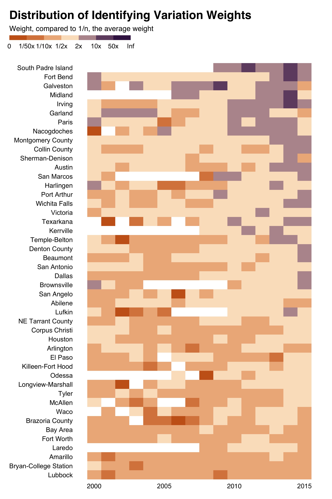
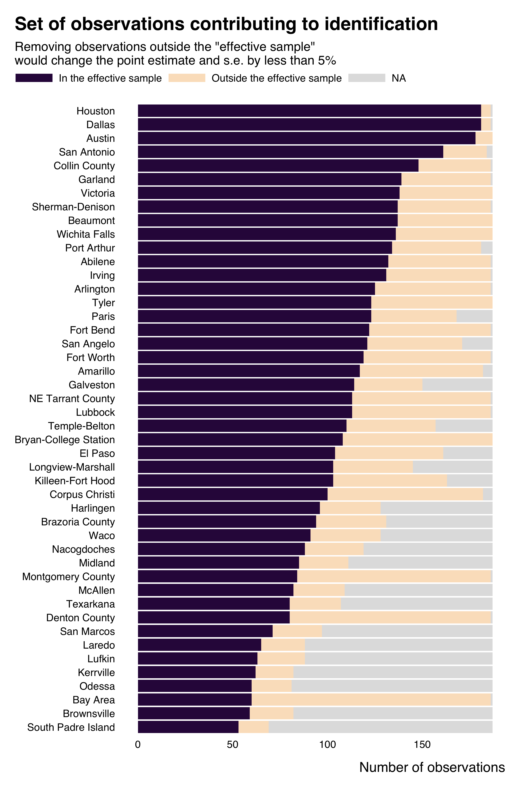

This package provides tools to easily identify the identifying variation in a regression, specifically in applied economics analyses.
This package is built as part of a research project. As such, the associated paper provides a detailed scientific description of its content and of its underpinnings.
This package is under active development and some functions may not work perfectly, yet.
Installation
You can install the development version of ididvar from GitHub with:
# install.packages("devtools")
devtools::install_github("vincentbagilet/ididvar")Usage
Most of the functions of the package take as input the output of a regression and the name of the variable of interest. ididvar supports a breadth of estimation functions (lm, plm::plm, fixest::feols, AER::ivreg for instance).
First, the package provides a straightforward function to compute identifying variation weights: idid_weights.
library(ididvar)
library(ggplot2)
reg_ex_fixest <- ggplot2::txhousing |>
dplyr::mutate(l_sales = log(sales)) |>
fixest::feols(fml = l_sales ~ median + listings | year + city, vcov = "twoway")
idid_weights(reg_ex_fixest, "median") |>
head()
#> [1] 1.417497e-05 5.163932e-05 5.908480e-05 1.918702e-06 7.089139e-08
#> [6] 7.372159e-09The package also allows for an effortless exploration of these weights through visualizations (idid_viz_weights, idid_viz_weights_map, idid_viz_cumul).
idid_viz_weights(reg_ex_fixest, "median", year, city, order = "y") +
ggplot2::labs(x = NULL, y = NULL) 
idid_viz_cumul(reg_ex_fixest, "median")
It also provide functions to identify observations that actually contribute to identification, in the sense that dropping the other observations does not significantly affect the estimate obtained (idid_viz_contrib, idid_viz_contrib_map, idid_viz_drop_change).
idid_viz_contrib(reg_ex_fixest, "median", var_y = city, order = "y") +
ggplot2::labs(y = NULL)
The package provides a large set of functions. The Get started vignette introduces them in a concise manner, while also describing a typical workflow for analysis. Online appendices of the associated paper complements this vignette by providing an example of a practical implementation of an analysis using the ididvar package.
Feedback and contributions
Feedback and contributions are more than welcome. If you find a bug or if the package does not work on your specific case, do not hesitate to create a new issue on Github or send me an email at vincent.bagilet@ens-lyon.fr.